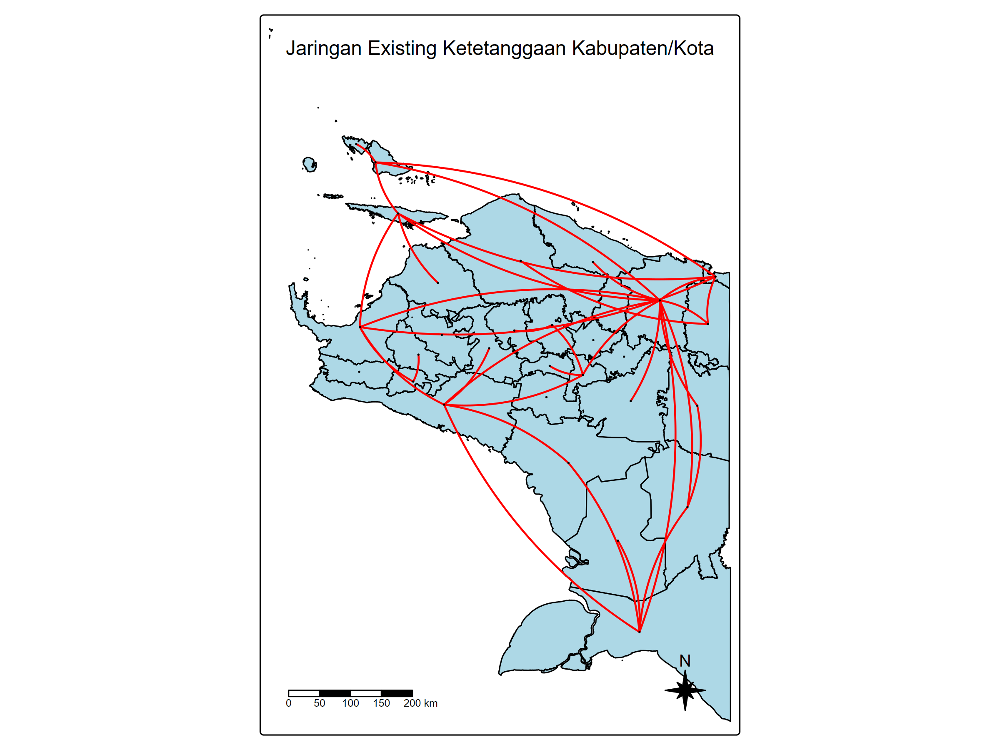
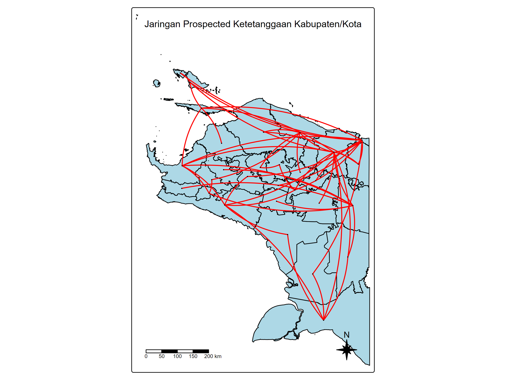
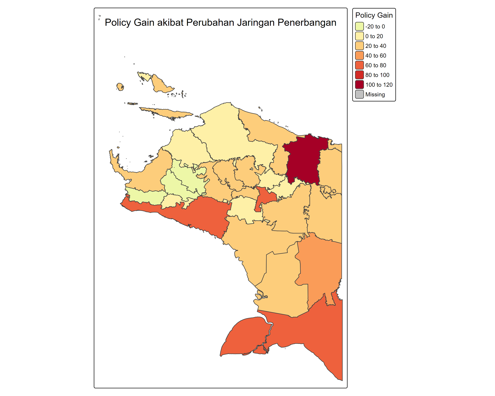

Hi! I'm
Yenro
A data analyst who loves diving into data and finding the hidden gems. Turning raw numbers into meaningful insights.
Who Am I?
Hi there, I'm Yenro Sagala — a data analyst who loves diving into data and finding the hidden gems. I'm good at cleaning messy data, crunching numbers, making pretty charts and soon. I use tools like SQL, Python, R to turn data into something useful.
I'm always looking for new challenges and ways to help businesses make smarter decisions.
Data Mining
Extracting patterns from large datasets using Python & SQL
Data Visualization
Building interactive dashboards in Tableau, Shiny & Streamlit
Descriptive Analysis
Summarizing data with statistics to tell clear stories
Inference Analysis
Drawing conclusions from data using hypothesis testing
8+ years of experience with
numerous surveys & data projects completed!
Tools & Technologies
Programming
Libraries
Visualization
Spreadsheet
Data & Database
Other
Education
I am pursuing my Magister's degree in Statistic at Institut Teknologi Sepuluh Nopember, Expected Feb 2026 at Surabaya.
During my studies, I focus on Spatial Data Analysis and advanced statistical modeling. This academic experience equips me with skills to analyze data based on geographic location.
I hold a Bachelor's degree in Statistic from Sekolah Tinggi Ilmu Statistik, 2015. My studies included core statistical concepts, data analysis techniques, and programming languages like R and Python.
I graduated from SMA N. 1 Pangururan in 2011. During my time there, I focused on Mathematics, Science, and Microsoft Excel. I participated in the Mathematics Olympiad at the Regency level, achieving runner-up status.
Certifications
ASN (Aparatur Sipil Negara) — Verified
Government Employee Credential — BKN
Master of Statistics Recent
Institut Teknologi Sepuluh Nopember, 2026
Bachelor of Statistics
Sekolah Tinggi Ilmu Statistik, 2015
Mathematics Olympiad — Runner Up
Regency Level, SMA N. 1 Pangururan
Work Experience
Data Analyst at BPS Provinsi Papua
As a fulltime data analyst with five years of experience BPS Papua Province, I've honed my skills in data collection, cleaning, analysis, and visualization. My proficiency in statistical software like Microsoft Excel, R, and Python has enabled me to successfully participate in projects such as Sensus Penduduk 2020 and Sensus Pertanian 2023 and more Survey. I've consistently delivered accurate and reliable insights, driving informed decision-making within the government sector.
Data Analyst at BPS Kabupaten Mimika
I have a solid three-year background as a data analyst at the Mimika District Central Statistics Agency. My role encompassed a wide range of data management tasks, including data collection, cleaning, analysis, and visualization. Leveraging statistical software like Microsoft Excel, R, and Python, I successfully executed surveys, analyzed census and survey data, and developed robust statistical models. I've made significant contributions to projects such as Sensus Ekonomi 2016 and numerous other surveys.
Recent Projects

Data Visualization Dashboard
Interactive dashboards for exploring datasets and presenting insights visually.

Data Cleaning Pipeline
Automated workflows for handling missing values, outliers, and data standardization.
Data Mining
Web scraping and text mining to extract structured data from publications and news sources.

Statistical Summary Report
Comprehensive descriptive statistics and summary reports for survey and census datasets.
Inference Analysis
Statistical simulations and inference methods including sampling techniques and distribution modeling.
Research Progress Report
Documenting research methodology, findings, and progress for academic and institutional reporting.
Papua PDRB Growth — Spatial Impact Analysis
A spatial econometric study quantifying how prospective transportation network expansions across Papua's 29 regencies alter regional economic multipliers, using Spatial Autoregressive (SAR) models and network multiplier decomposition.
Moran's I
0.284
z = 2.40, p = 0.008
ρ Change
−0.022 → 0.343
SAR spatial coefficient
Regencies Gained
5
Network access added
4-Step Analytical Pipeline
Data & Shapefile
Load PDRB data and Papua administrative shapefile
OLS & Moran's I
Baseline regression and spatial autocorrelation test
SAR Model
Fit Spatial Autoregressive model for both networks
Multiplier Analysis
Compute network multipliers and policy gains
Transportation Network Maps



Model Outputs & Impact Decomposition
Moran's I
0.2835
ρ Existing
−0.022
ρ Future
+0.343
AIC Δ
−2.14
Model Comparison
| Model | ρ | AIC | Log-Likelihood |
|---|---|---|---|
| Existing (SAR) | −0.02194 | 216.58 | −105.29 |
| Future (SAR) Best | 0.34314 | 214.44 | −104.22 |
| OLS (baseline) | — | 214.60 | — |
Impact Decomposition
| Impact | Existing | Future | Difference | % Change |
|---|---|---|---|---|
| Direct | 1.000127 | 0.998287 | −0.001839 | −0.184% |
| Indirect | −0.017896 | −0.019758 | −0.001862 | +10.407% |
| Total | 0.982231 | 0.978529 | −0.003702 | −0.377% |
Interpretation note: The ρ (spatial autoregressive coefficient) was held constant at the Existing SAR estimate (−0.022) when computing the future network multiplier. This isolates the pure topological effect of adding new road connections, independent of parameter re-estimation. The Δ is computed as Future − Existing, so negative values reflect a reduction in the total multiplier effect.
Policy Gain by Regency
| # | Kabupaten / Kota | Mult. Existing | Mult. Future | Policy Gain | % Change |
|---|---|---|---|---|---|
| 1 | Mamberamo Raya | 0.9785 | 0.9785 | 0.0000 | ~0 |
| 2 | Lanny Jaya | 0.9785 | 0.9785 | 0.0000 | ~0 |
| 3 | Jayawijaya | 0.9785 | 0.9785 | 0.0000 | ~0 |
| 4 | Mimika | 0.9785 | 0.9785 | 0.0000 | ~0 |
| 5 | Sarmi | 0.9785 | 0.9785 | 0.0000 | ~0 |
| 6 | Waropen | 0.9785 | 0.9785 | 0.0000 | ~0 |
| 7 | Kepulauan Yapen | 0.9785 | 0.9785 | 0.0000 | ~0 |
| 8 | Supiori | 0.9785 | 0.9785 | 0.0000 | ~0 |
| 9 | Deiyai | 0.9785 | 0.9785 | 0.0000 | ~0 |
| 10 | Asmat | 0.9785 | 0.9785 | 0.0000 | ~0 |
| 11 | Paniai | 0.9785 | 0.9785 | 0.0000 | ~0 |
| 12 | Puncak Jaya | 0.9785 | 0.9785 | 0.0000 | ~0 |
| 13 | Yahukimo | 0.9785 | 0.9785 | 0.0000 | ~0 |
| 14 | Boven Digoel | 0.9785 | 0.9785 | 0.0000 | ~0 |
| 15 | Jayapura | 0.9785 | 0.9785 | 0.0000 | ~0 |
| 16 | Pegunungan Bintang | 0.9785 | 0.9785 | 0.0000 | ~0 |
| 17 | Puncak | 0.9785 | 0.9785 | 0.0000 | ~0 |
| 18 | Kota Jayapura | 0.9785 | 0.9785 | 0.0000 | ~0 |
| 19 | Mappi | 0.9785 | 0.9785 | 0.0000 | ~0 |
| 20 | Tolikara | 0.9785 | 0.9785 | 0.0000 | ~0 |
| 21 | Biak Numfor | 0.9785 | 0.9785 | 0.0000 | ~0 |
| 22 | Nabire | 0.9785 | 0.9785 | 0.0000 | ~0 |
| 23 | Keerom | 0.9785 | 0.9785 | 0.0000 | ~0 |
| 24 | Merauke | 0.9785 | 0.9785 | 0.0000 | ~0 |
| 25 | Dogiyai was isolated | 1.0000 | 0.9785 | -0.02147 | -2.147% |
| 26 | Intan Jaya was isolated | 1.0000 | 0.9785 | -0.02147 | -2.147% |
| 27 | Mamberamo Tengah was isolated | 1.0000 | 0.9785 | -0.02147 | -2.147% |
| 28 | Nduga was isolated | 1.0000 | 0.9785 | -0.02147 | -2.147% |
| 29 | Yalimo was isolated | 1.0000 | 0.9785 | -0.02147 | -2.147% |
R Code
library(sf)
library(spdep)
library(spatialreg)
library(tmap)
library(readxl)
library(dplyr)
library(openxlsx)Papua_sf <- st_read(shp_path, quiet = TRUE) |>
filter(KODE_PROV == 91) |>
arrange(KAB_KOTA) |>
mutate(sort_order = ifelse(
KAB_KOTA == "Kota Jayapura", 2, 1
)) |>
arrange(sort_order, KAB_KOTA) |>
select(-sort_order)W_existing <- read_weight_matrix(network_file, "Existing")
W_future <- pmax(W_existing, hub_dependence_matrix)
Wext_listw <- mat2listw(W_existing, style = "W", zero.policy = TRUE)
WFutu_listw <- mat2listw(W_future, style = "W", zero.policy = TRUE)model_formula <- Miskin ~ 1
SAR_existing <- lagsarlm(
formula = model_formula,
data = Papua_data,
listw = Wext_listw,
zero.policy = TRUE
)
SAR_future <- lagsarlm(
formula = model_formula,
data = Papua_data,
listw = WFutu_listw,
zero.policy = TRUE
)bezier_line <- function(p1, p2, curvature = 0.15, n = 100) {
mid <- (p1 + p2) / 2
dx <- p2[1] - p1[1]
dy <- p2[2] - p1[2]
sign_curve <- sample(c(-1, 1), 1)
control <- c(
mid[1] - sign_curve * curvature * dy,
mid[2] + sign_curve * curvature * dx
)
t <- seq(0, 1, length.out = n)
x <- (1-t)^2 * p1[1] + 2*(1-t)*t*control[1] + t^2*p2[1]
y <- (1-t)^2 * p1[2] + 2*(1-t)*t*control[2] + t^2*p2[2]
st_linestring(cbind(x, y))
}rho_policy <- SAR_existing$rho # hold rho constant
S_existing <- solve(diag(n) - rho_policy * W_existing_std)
S_future <- solve(diag(n) - rho_policy * W_future_std)
# Direct, Indirect, Total impacts
Papua_data$Policy_Gain_Pct <-
100 * (rowSums(S_future) - rowSums(S_existing)) / rowSums(S_existing)